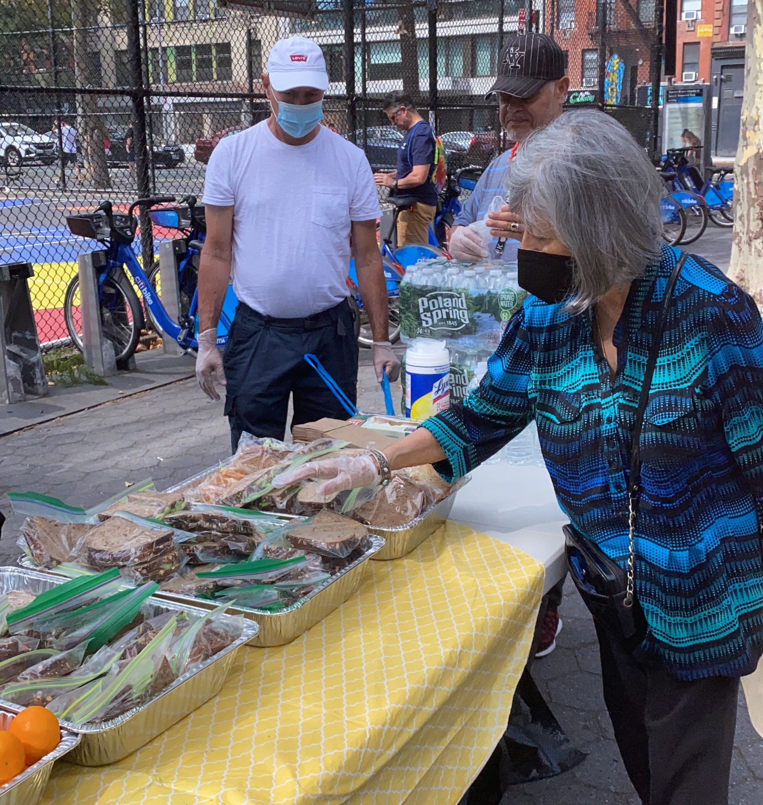

Community Service
I have been actively involved in volunteering for Sathya Sai Baba’s Food Organization, where I contributed to preparing and distributing meals to the homeless. This experience has allowed me to connect with the community and understand the importance of kindness and giving back.
Medical Outreach
In addition to food services, I’ve also volunteered at a medical funding center that provided free flu shots and basic medical care for the homeless. It was fulfilling to assist in creating a safer and healthier environment for those in need.
These experiences have deeply influenced my perspective, inspiring me to continue contributing to society in meaningful ways.